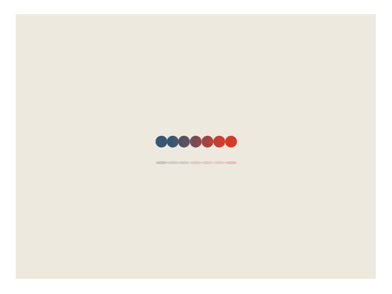
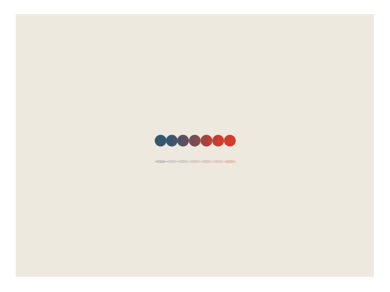

上周去了一趟书店，买了一本《这就是心理学》，在家用了一个下午看完了，感觉阅读速度还可以，久违的看实体书也比较开心，这周又去书店看了一本《瓦尔登湖》，随便写些感想，希望以后能经常去书店看看。

上周去了一趟书店，买了一本《这就是心理学》，在家用了一个下午看完了，感觉阅读速度还可以，久违的看实体书也比较开心，这周又去书店看了一本《瓦尔登湖》，随便写些感想，希望以后能经常去书店看看。
使用SRS+OBS做一个自己的直播服务。
出于多平台之间iCloud和OneDrive非常差的表现，决定自己搭一个服务器做网盘，顺便也搞了一下emby服务和远程串流。
通过读取CCD的bgdata文件直接处理得到光束质量$M^2$，将一个小时的工作流程直接快进到一秒。
写论文经常要把参考文献title转化成标准引用格式，写了一个wox插件通过google scholar来完成快速格式化。
Windows系统的cmd和powershell可以说是天下人苦之久矣，在win10下使用git或者一些linux十分顺手的操作比如sudo vim host 之类，都是令人十分痛苦和不适的。而WSL的出现完美的解决了这一需求。
简要介绍一下安卓终端神器Termux及相关配置